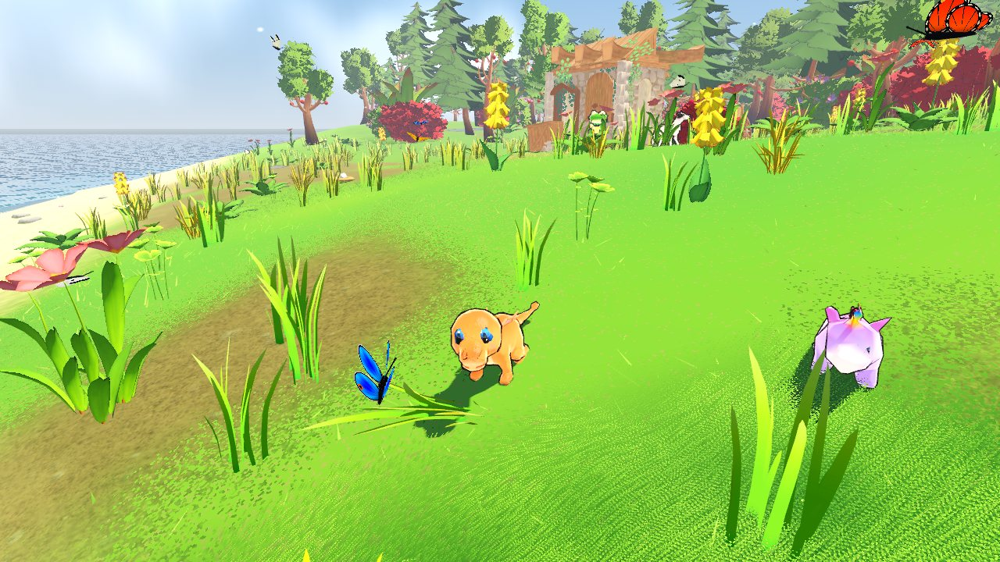

Dans le jeuCalinounou
Une petite licorne en peluche, toute douce. Elle fait visiter l'île à Choupie : la maison de Gigi, le premier abri, la chasse.
Puis elle demande : « Tu veux bien être mon ami ? » Tu réponds avec deux gros boutons : Oui ou Plus tard. Si c'est plus tard, elle attend près de l'abri.
Amie, elle marche à côté de Choupie, s'assoit quand il s'arrête et dort près de lui. Elle propose des missions qui le font grandir, et parfois un cadeau.